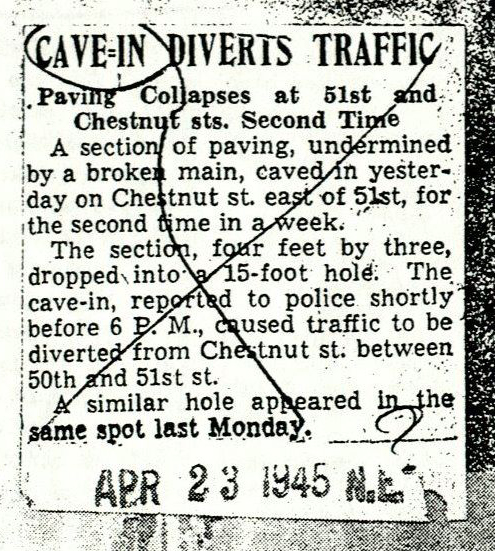

<!doctype html>
<html lang="en">
  <head>
    <meta charset="utf-8">
    <meta name="viewport" content="width=device-width, initial-scale=1, shrink-to-fit=no">
    <meta name="description" content="">
    <meta name="author" content="">

    <title></title>

    <!-- Bootstrap core CSS -->
    <link rel="stylesheet" href="https://maxcdn.bootstrapcdn.com/bootstrap/4.0.0-beta.2/css/bootstrap.min.css" integrity="sha384-PsH8R72JQ3SOdhVi3uxftmaW6Vc51MKb0q5P2rRUpPvrszuE4W1povHYgTpBfshb" crossorigin="anonymous">
    <link rel="stylesheet" type="text/css" href="css/stylesheet.css">
    <!-- Custom styles for this template -->
    <link href="css/cover.css" rel="stylesheet">
  </head>

  <body>

    <div class="site-wrapper">

      <div class="site-wrapper-inner">

        <div class="cover-container">

          <!-- <header class="masthead clearfix">
            <div class="inner">
              <h3 class="masthead-brand">Cover</h3>
              <nav class="nav nav-masthead">
                <a class="nav-link active" href="#">Home</a>
                <a class="nav-link" href="#">Features</a>
                <a class="nav-link" href="#">Contact</a>
              </nav>
            </div>
          </header>
-->
          <main role="main" class="inner cover">

            <!--
            <h1 class="cover-heading">Cover your page.</h1>
            <p class="lead">Cover is a one-page template for building simple and beautiful home pages. Download, edit the text, and add your own fullscreen background photo to make it your own.</p>
            <p class="lead">
              <a href="#" class="btn btn-lg btn-secondary">Learn more</a>
            </p>-->
          </main>

          <footer class="mastfoot" style="max-height:200px">
            <div class="container-fluid">
              <div class="row">
                <div class="col-sm">
                  <p id="p1"></p>
                  <p id="p2"></P>
                  <p id="p3"></p>
                  <p id="p4"></p>
                  <p id="p5"></p>
                </div>
                <div class="col-sm">
                  <p id="description"></P>
                </div>
                <div class="col-sm">
                  
                </div>
              </div>
            </div>
          </footer>

        </div>

      </div>

    </div>
    <script src="caveins.geojson"></script>
    <script src="http://d3js.org/d3.v3.min.js"></script>

    <script>

    // var data= [
    //   {'ID':'1', 'address':'5160 Hoopes St', 'Latitude':'39.967557', 'Longitude':'-75.224554', 'Year':'1950', 'Title':'Mill Creek Cave-in', 'Casualty':'88', 'Image_File':'abc.jpeg', 'Text':'The area around Rolla may not appear to have much in terms of attractions, but the region is full of outdoor and geologic wonders.  Many of these are located within 15 or 20 miles of Rolla and make for excellent day trips or overnight camping opportunities.  There is much more to see and do in the area even though many UMR students claim there is nothing to do in Rolla.'},
    //   {'ID':'2', 'address':'5160 Hoopes St', 'Latitude':'39.967557', 'Longitude':'-75.224554', 'Year':'1950', 'Title':'Millsssss', 'Casualty':'88', 'Image_File':'abc.jpeg', 'Text':'The area around Rolla may not appear to have much in terms of attractions, but the region is full of outdoor and geologic wonders.  Many of these are located within 15 or 20 miles of Rolla and make for excellent day trips or overnight camping opportunities.  There is much more to see and do in the area even though many UMR students claim there is nothing to do in Rolla.'},
    //   {'ID':'3', 'address':'5160 Hoopes St', 'Latitude':'39.967557', 'Longitude':'-75.224554', 'Year':'1950', 'Title':'Mill Creek Cave-in', 'Casualty':'88', 'Image_File':'abc.jpeg', 'Text':'The area around Rolla may not appear to have much in terms of attractions, but the region is full of outdoor and geologic wonders.  Many of these are located within 15 or 20 miles of Rolla and make for excellent day trips or overnight camping opportunities.  There is much more to see and do in the area even though many UMR students claim there is nothing to do in Rolla.'},
    //   {'ID':'4', 'address':'5160 Hoopes St', 'Latitude':'39.967557', 'Longitude':'-75.224554', 'Year':'1950', 'Title':'Mill Creek Cave-in', 'Casualty':'88', 'Image_File':'abc.jpeg', 'Text':'The area around Rolla may not appear to have much in terms of attractions, but the region is full of outdoor and geologic wonders.  Many of these are located within 15 or 20 miles of Rolla and make for excellent day trips or overnight camping opportunities.  There is much more to see and do in the area even though many UMR students claim there is nothing to do in Rolla.'},
    //   {'ID':'5', 'address':'5160 Hoopes St', 'Latitude':'39.967557', 'Longitude':'-75.224554', 'Year':'1950', 'Title':'Mill Creek Cave-in', 'Casualty':'88', 'Image_File':'abc.jpeg', 'Text':'The area around Rolla may not appear to have much in terms of attractions, but the region is full of outdoor and geologic wonders.  Many of these are located within 15 or 20 miles of Rolla and make for excellent day trips or overnight camping opportunities.  There is much more to see and do in the area even though many UMR students claim there is nothing to do in Rolla.'},
    //   {'ID':'6', 'address':'5160 Hoopes St', 'Latitude':'39.967557', 'Longitude':'-75.224554', 'Year':'1950', 'Title':'Mill Creek Cave-in', 'Casualty':'88', 'Image_File':'abc.jpeg', 'Text':'The area around Rolla may not appear to have much in terms of attractions, but the region is full of outdoor and geologic wonders.  Many of these are located within 15 or 20 miles of Rolla and make for excellent day trips or overnight camping opportunities.  There is much more to see and do in the area even though many UMR students claim there is nothing to do in Rolla.'}
    // ]

    d3.select("#p1").text(caveins.features[0].properties['Title']);
    d3.select("#p2").text(caveins.features[0].properties['Year']);
    d3.select("#p3").text(caveins.features[0].properties['address']);
    d3.select("#p4").text(caveins.features[0].properties['Latitude']);
    d3.select("#p5").text(caveins.features[0].properties['Longitude']);

    d3.select("#description").text(caveins.features[0].properties['Text']);

    d3.select("#p7").text(caveins.features[0].properties['Image_File']);

    </script>
    <script src="https://code.jquery.com/jquery-3.2.1.slim.min.js" integrity="sha384-KJ3o2DKtIkvYIK3UENzmM7KCkRr/rE9/Qpg6aAZGJwFDMVNA/GpGFF93hXpG5KkN" crossorigin="anonymous"></script>
    <script src="https://cdnjs.cloudflare.com/ajax/libs/popper.js/1.12.3/umd/popper.min.js" integrity="sha384-vFJXuSJphROIrBnz7yo7oB41mKfc8JzQZiCq4NCceLEaO4IHwicKwpJf9c9IpFgh" crossorigin="anonymous"></script>
    <script src="https://maxcdn.bootstrapcdn.com/bootstrap/4.0.0-beta.2/js/bootstrap.min.js" integrity="sha384-alpBpkh1PFOepccYVYDB4do5UnbKysX5WZXm3XxPqe5iKTfUKjNkCk9SaVuEZflJ" crossorigin="anonymous"></script>
  </body>
</html>
